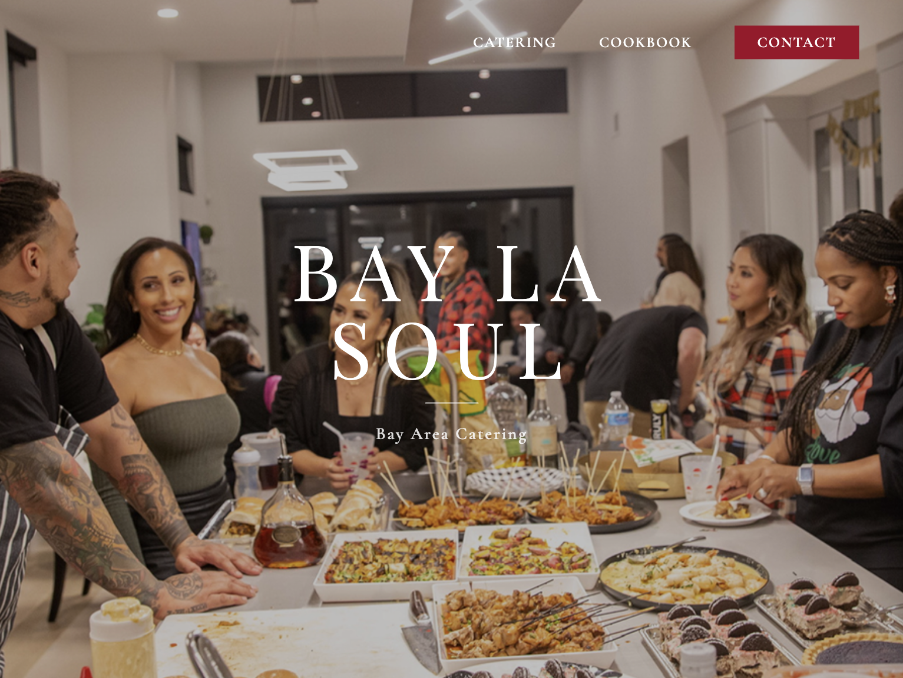
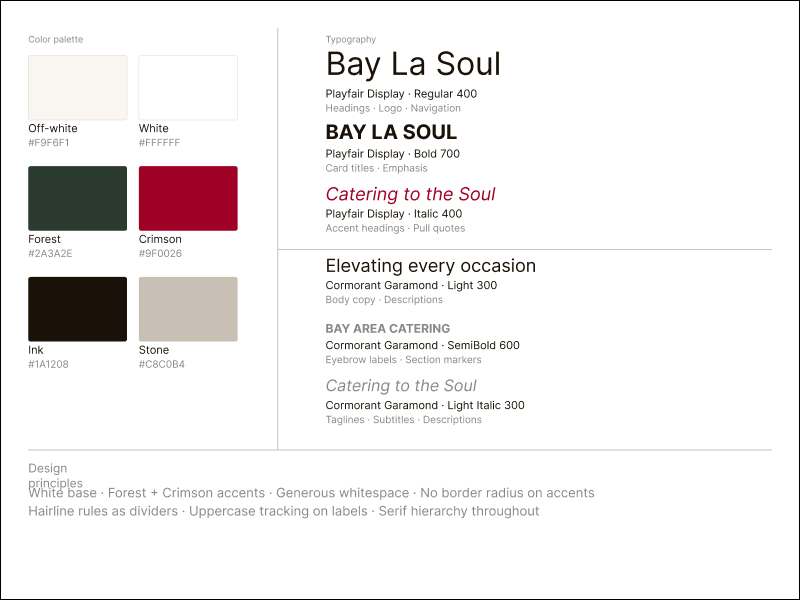
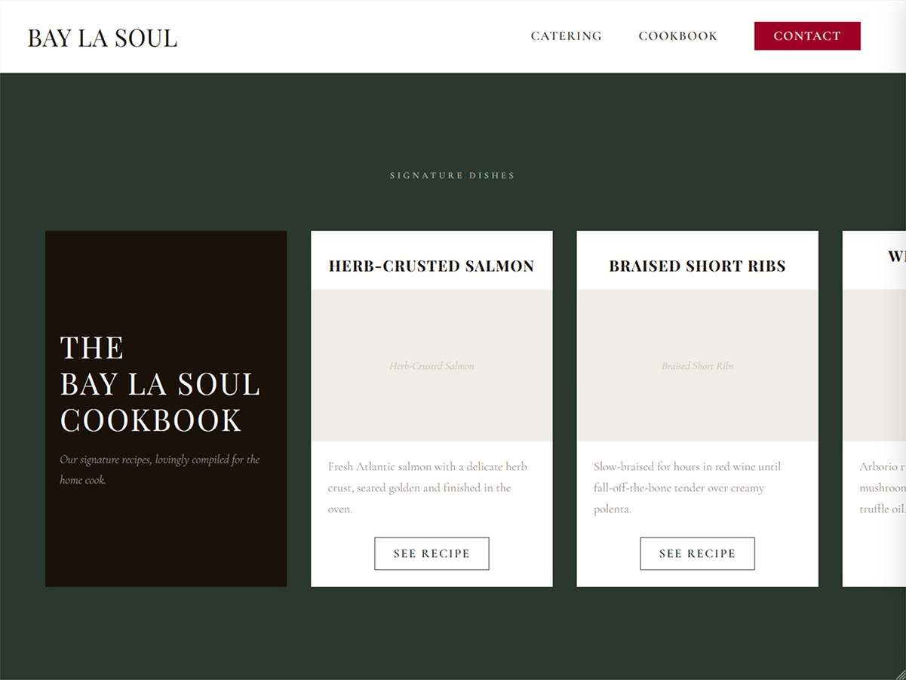
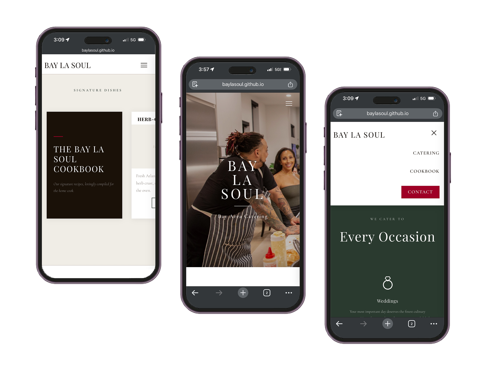
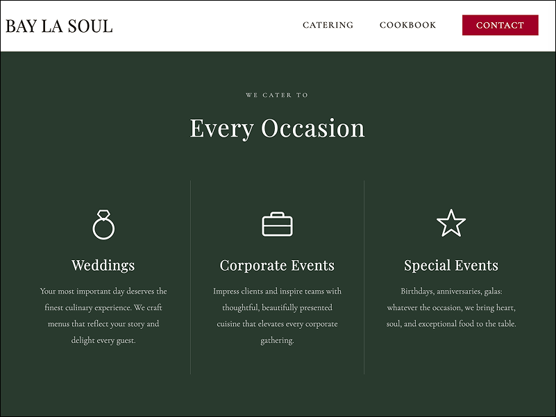

Catering to the Soul

Bay La Soul is a personal site for Darius, a chef looking to expand the online presence of his catering services. A place to tell the story behind the food, explore a sample of the dishes, and an invitation to schedule events.
The goal was to create something that represented Darius’s identity as a chef, a blend of Latin, Asian, and Soul foods.
You can view the full prototype here.
Before Darius was a client, he was a friend. The idea for the Bay La Soul website started as a conversation; he had been catering for small private venues, but wanted to expand his online presence past an Instagram account. In our discussion, we covered what it was that he was looking for: the look and feel of the website, his target audience, and the features he wanted.

Darius wanted something that reflected him as a chef. Something that was clean and efficient, but not afraid to experiment with something new. One of the first things he mentioned was to include a selection of dishes so that viewers could see what kinds of dishes he liked to make, if not try a few of them for themselves. As Darius is a chef and has little to no coding experience, he wanted the website to be simple not only for ease of use, but so it would be easier on him to update as he cycled dishes in and out.

Early wireframes focused on the single page layout, establishing visual hierarchy. The layout was left sparse to let the food do most of the work.
Multiple iterations were reviewed with Darius to ensure everything flowed how he wanted.
The design is intentionally simple, with a minimal color palette and everything laid out on a single page. The final prototype brings together the cookbook, contact information for Darius, and a biography of the chef himself into one page.

